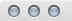

Use Balthisar Tidy in Full Screen Mode
Full screen mode makes it simple for you to use Balthisar Tidy without any distractions. Follow these steps to enable full screen mode.
-
Select Enter Full Screen from the View menu.

-
Alternatively you can use the shortcut key as shown in the View menu.
-
You can also use the standard Mac OS X document window title bar control to start full screen.
- On Mac OS X before versions 10.10 (“Yosemite”) the standard control is on the top-right of the document title bar.
- On Mac OS X 10.10 and newer, the zoom button starts full screen mode. 